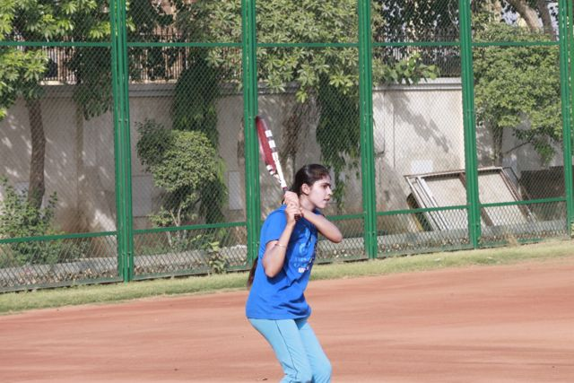
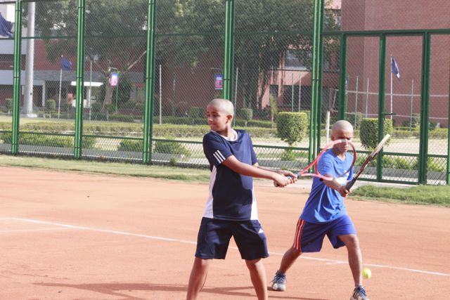

- 


- 


MONTANES DENIES MONFILS IN NICE FINAL
Nice, Franceby ATP Staff
25.05.2013
World No. 82 Albert Montanes is set to return to the Top 50 of the Emirates ATP Rankings after lifting his sixth ATP World Tour trophy on Saturday. The Spaniard defeated French wild card Gael Monfils 6-0, 7-6(3) in a rain-interrupted final at the Open de Nice Côte d’Azur.
“I was not supposed to play here in the first place," admitted Montanes. "I was in my home town, 200km from Barcelona, with friends when I found out I was entering the main draw last Saturday night. So it’s pretty incredible that I am here now with the Nice trophy.
"No doubt the fact that I came here with no pressure, just happy to play, taking it day-by-day and match-by-match, helped me win this week.”
The 32-year-old Montanes, who reached a career-high World No. 22 in August 2010, will rise to around No. 48 after collecting 250 Emirates ATP Rankings points. The Barcelona resident won his first title since 2010, when he won two trophies at thePortugal Open in Estoril (d. Gil) and the MercedesCup in Stuttgart, where he also defeated Monfils.
Montanes improved to a 4-1 lead in his FedEx ATP Head2Head series with Monfils. The Spaniard started the final in red hot form, winning the first seven games, with the match briefly interrupted due to rain at 4-0 in the first set. After Monfils had registered his first game, Montanes broke for a 3-1 lead in the second set. Monfils fought back, breaking in the seventh game to force a tie-break, but could not deny Montanes as he wrapped up victory in 73 minutes.
"I knew I could defeat Gael and today I was very solid the entire match, hitting very deep and playing well in the crucial points," said Montanes.
Montanes had won back-to-back tour-level matches just once in nine events coming into Nice, reaching the quarter-finals in Sao Paulo (l. to Bolelli), and improved to a 12-9 match record on the season. He is the fourth Spaniard this year to win an ATP World Tour trophy, joining Rafael Nadal (six), David Ferrer (two) and Tommy Robredo (one).
The 26-year-old Monfils dropped to a 4-14 finals record (1-4 on clay). He was bidding to win his first title since 2011, when he lifted the If Stockholm Open trophy (d. Nieminen). The Frenchman has fallen to World No. 109 in the Emirates ATP Rankings due to injury troubles, but is projected to rise to No. 80 after reaching the final of this ATP World Tour 250 clay-court tournament. “I tried my best today, but I faced a better player than me and I want to congratulate him for his title," said Monfils. "I tried different things, but it didn’t work. He was just better than me. I played a lot of matches in the past two weeks and I felt maybe a bit tired physically and mentally.
"Overall, it was a great week for me and I want to thank the sponsors and the tournament for giving me a wild card. I played some really good matches and I hope to be back next year.”